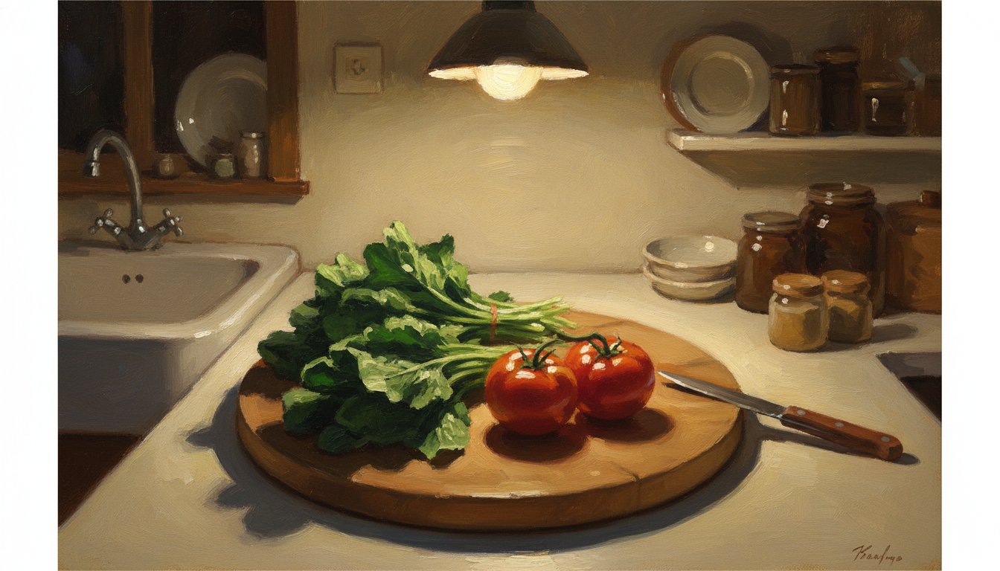

「野菜食べられない」と書きながら、ほうれん草を2束茹でていた夜

「野菜食べられない」と思いながら、ほうれん草を2束茹でていた夜
5月17日の夜、台所に立っていた。
頭の中ではずっと「自分は野菜食べられないんだよな」「自炊のモチベ低いんだよな」と独り言を流していた。仕事終わりで疲れていて、走りに行きたかったのに行けなかった、その残念さもまだ残っていた。
ところが、手は別のことをしていた。
冷蔵庫からひき肉のパックを出して、玉ねぎを刻んで、卵を割って、パン粉を入れて、塩こしょうを振って、両手でべちゃべちゃと混ぜていた。ハンバーグのタネだった。指のあいだから肉と脂と玉ねぎの汁がはみ出してきて、手のひらの温度でだんだん粘りが出てくる。あの感触が好きだということを、混ぜ終わってから思い出した。
その横で、ほうれん草が2束、シンクに置いてあった。スーパーの安売りで2袋まとめて買ってきていた。鍋に湯を沸かして、根の部分から先に入れて、葉を倒すように沈める。湯が一瞬で緑色に染まる。氷水にあげて、ぎゅっと絞ると、両手のひらにちょうど収まるくらいの小さな塊になった。
トマトも2個、まな板の上にあった。半分に切ると、種のまわりのゼリーがつやっと光った。
全部食べた。
タネは焼かずにそのまま、味見だけで結構な量を口に入れていた。ほうれん草はおひたしになるはずだったのに、お湯から上げた直後にそのままかじっていた。トマトは塩も振らずに、皮ごと。
食べ終わってから、ふと気づいた。
——「野菜食べられない、自炊モチベ低い」って、誰の話だっけ。
ラベルだけが先に貼られている
頭の中の独り言と、手元の事実が、こんなにずれていた日は珍しかった。
普段は気づかない。「野菜あんまり食べない人」というラベルを、何年も前から自分に貼っていて、その紙の上から現実を見ている。ハンバーグのタネに玉ねぎが入っていることも、ほうれん草を茹でたことも、トマトを丸かじりしたことも、ラベルの裏に隠れて見えなくなる。
「自炊モチベ低い」も同じだった。
仕事から帰ってきて、コンロに火をつけて、玉ねぎを刻んで、ひき肉をこねている時点で、もう自炊している。それなのに「モチベ低い」と言いながらやっていた。やっていることと、自分に言い聞かせていることが、別々のレーンを走っていた。
走れなかったことを責めて落ち込む、というパターンも今日は出てこなかった。「明日も時間がある」と書いて切り替えた。これも、できないラベルが少し剥がれかけている合図なのかもしれない。
起点層：心理学を勉強したいと思っていた学生
このラベルの貼り方には、別の覚え方もある。
少し前、兄から連絡が来た。たわいない用件だった。電話を切ったあと、ふと思い出したことがある。
学生時代、心理学を勉強したいと思っていた時期があった。
中学から大学にかけてのどこかだったと思う。本屋で心理学の棚の前に立っていた記憶があって、何冊か手に取ったまま結局買わずに帰ったこともあった。当時は「自分はそういう道に進む人ではない」と思っていた。文系で食べていけるイメージが湧かなかったし、まわりに心理学を専攻している人もいなかった。
そのまま、ラベルは貼られた。「自分は心理学を勉強する人ではない」というラベル。
そこから二十年以上、その関心のことは忘れていた。店舗で働いて、現場をまわして、人を見て、評価して、また見て、というサイクルの中にいた。心理学の本は買わなかった。
ところが今、毎日やっていることを並べてみると、なにかおかしい。
ジャーナリングを続けている。日記をAIに読ませて、自分の感情の癖を整理してもらっている。「ラベル」「思い込み」「内省」みたいな言葉で、自分のことを観察している。これは何かと言われたら、たぶん心理学のすぐ近くにある。
兄からの連絡で思い出して、自分でも少し驚いた。きっとそこから始まっていたんだな、と思った。
学生時代に貼った「心理学を勉強する人ではない」というラベルは、ずっとそこにあった。でも、その裏で、関心のほうは静かに続いていた。ラベルを剥がそうとした覚えはない。ただ、関心が消えなかっただけだった。
剥がさなくても、現実は積み上がる
5月17日の台所も、たぶんそれと同じ仕組みだった。
「野菜食べられない」というラベルを、頭の中ではまだ貼ったままだった。剥がす作業はしていない。それなのに、ほうれん草を2束茹でて、トマトを丸かじりしている。ラベルと現実のあいだに、すきまが広がっていた。
このすきまに気づけたことが、今日の収穫だった。
ラベルを無理に剥がさなくていい。剥がそうとすると、たぶん力が要って、また別の独り言が始まる。「剥がせない自分」「変われない自分」という新しいラベルが、上から貼られていく。
剥がす作業は、いったん横に置く。ただ、すきまを見ておく。
「野菜食べられない」と言いながら、ほうれん草を絞った両手は確かに緑色に染まっていた。「自炊モチベ低い」と言いながら、ハンバーグのタネは指のあいだではみ出していた。事実だけが、ラベルの裏で静かに積み上がっている。
ラベルが落ちるとしたら、積み上がった事実の重みで落ちるんだと思う。学生時代に「心理学を勉強する人ではない」と貼ったラベルの裏で、関心がずっと続いていたように。
夜、オイコスを食べて、シャワーを浴びて、寝た。
「自炊モチベ低い」と言いながらこれだけ食べた日のことは、ラベルの裏に積んでおく。
#日記 #ジャーナリング #エッセイ #note #毎日note #毎日更新 #続けること #内省 #自己観察 #気づき #書く #ひとりごと #ライフログ #雑記 #思考整理 #感情整理 #自分メモ #ものづくり #創作 #物書き #40代 #40代の生き方 #個人開発 #ひとり起業 #会社員 #サラリーマン #フリーランス #副業 #店長 #マネジメント #組織 #店舗運営 #人を育てる #対話 #コミュニケーション #人間関係 #家族 #子育て #メンター #上司部下 #生き方 #価値観 #誠実 #迷い #選択 #決断 #覚悟 #待つ #観察 #自己理解 #自己一致 #習慣 #瞑想 #ジム #運動 #読書 #執筆 #朝の時間 #夜の時間 #五月 #初夏 #福岡 #九州 #心の動き #日常 #暮らし #淡々 #小さな気づき #AI #AkariLab #自炊 #料理 #野菜 #ほうれん草 #トマト #ハンバーグ #台所 #夜ご飯 #思い込み #ラベリング #自己評価 #学生時代 #心理学 #関心 #地続き #認知バイアス #兄からの連絡 #三十年前 #今ジャーナリング #AIで内省 #ラベルを横に置く #実際の自分 #やれていること #二束のほうれん草 #二個のトマト #ハンバーグのタネ #包丁の音 #湯気 #夜の台所 #野菜食べられない